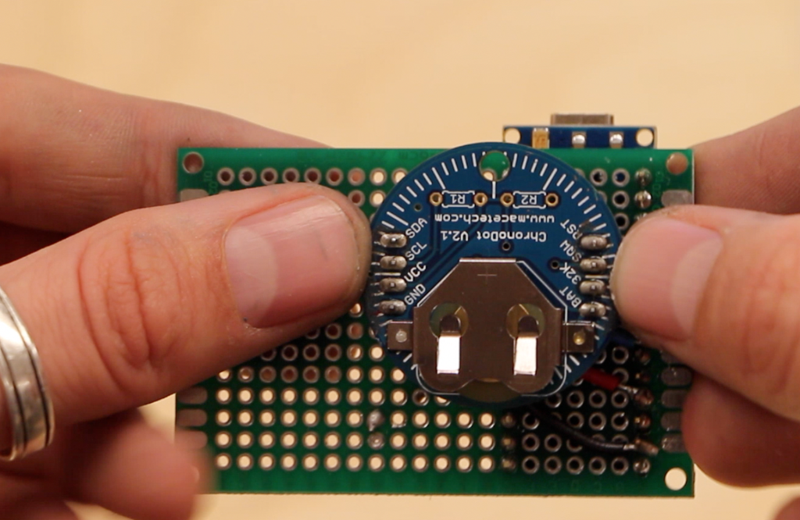

here are the building steps:
step #1
create a frame out of your chosen material, we used cardboard. you'll then need to carve the proper digit symbols into the cardboard to resemble the face of a clock. don't forget to add a period/block number carving at the top right.

step #2
we used an Arduino Nano for this project. so, next we connected 4 wires to the Nano: a wire to A4 and A5 for (SDA and SCL respectively for I2C communication with the ChronoDot), and a wire to GND and 5V. the other end of these wires will be connected to the ChronoDot at a later point. these wires should occupy the rows of your choice, on the top of the protoboard.

step #3
we now need to apply the ChronoDot module. it should be placed adjacent to the Nano. now you need to connect all of the wires related to the Nano and ChronoDot. SDA should be connected to A4, SCL to A5, 5V to Vcc, and GND to GND.

step #4
now, we'll need the DC power adapter. begin by screwing two wires into the positive and negative terminals of the into the DC power adapter. next, connect a wire from the ChronoDot’s Vcc to the positive power adapter terminal, and the GND of the ChronoDot to the negative terminal. now, it’s time to add the 1000uF capacitor. the negative lead is connected to the negative power adapter, and positive lead to the positive terminal.

step #5
watch the video on the project to learn how to assemble the Neopixels and apply it to the material.